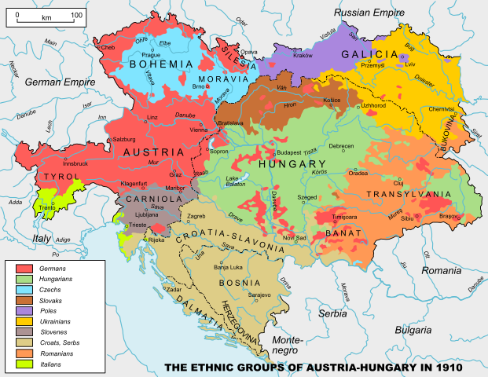

The Russian Empire vs. The Austro-Hungarian Empire: A Comparison of Eastern Empires
By: Sofia
Introduction
The history of Eastern Europe is filled with tales of grand empires vying for power and dominance. Two of the most influential were the Russian Empire and the Austro-Hungarian Empire. These two empires were vastly different in many ways, including their political systems, ethnic diversity, and military power. However, both empires were movers and shakers on the world stage. In this article, we will examine the similarities and differences between these two Eastern empires and explore the reasons for their success and ultimate downfall. We will look at their rise to power, their expansion, and their legacy. Join us on a journey through the history of Eastern Europe and discover the fascinating stories behind the Russian Empire and the Austro-Hungarian Empire. Learn about their battles, their diplomacy, and their lasting impact on the region. Whether you are a history buff or simply curious about the past, this article has something for everyone. Explore the rich history of Eastern Europe and discover the intricate web of politics, culture, and power that shaped these two great empires.
ad space
Geography and Territorial Expansion
Throughout history, empires have risen and fallen, each with their own unique cultural, political, and economic systems. Two such empires are the Russian Empire and the Austro-Hungarian Empire. Each empire had its own distinct strengths and weaknesses, but one of the most notable differences between the two was geography and territorial expansion.
The Russian Empire, located in Eastern Europe and Northern Asia, was known for its vast size and diverse array of cultures. At its peak, the empire extended from the Baltic Sea in the west to the Pacific Ocean in the east, covering over 22 million square kilometers. This immense expanse allowed for great diversity in language, religion, and customs, but also presented challenges in governing such a widespread territory.
The Austro-Hungarian Empire, on the other hand, was more centrally located in Europe. The Empire was created in 1867 through the union of the Austrian Empire and the Kingdom of Hungary, creating a dual monarchy with a shared ruler. While not as large as the Russian Empire, the Austro-Hungarian Empire had a diverse population of over 50 million people and a geographic reach that extended from the eastern Alps to the Carpathian Mountains.
When it comes to territorial expansion, the Russian Empire was known for its active role in pursuing annexation and colonization of nearby lands. The empire expanded its borders through military conquest, as well as through diplomatic negotiations and treaties. Some notable territorial acquisitions include the Baltic states, Finland, and the Caucasus region.
The Austro-Hungarian Empire, on the other hand, was focused more on maintaining its existing territories and balancing the interests of its diverse populations. It did acquire territory through diplomacy and wars, but it was not as aggressive in its expansion as the Russian Empire.
Overall, the geography and territorial expansion of the Russian Empire and the Austro-Hungarian Empire played a significant role in shaping their respective histories and legacies. By understanding these factors, we can gain a deeper appreciation of the complex and dynamic nature of these two Eastern empires.
ad space
Economy and Industrialization
The economic and industrial differences between the Russian Empire and the Austro-Hungarian Empire were stark and impactful in shaping the destinies of these great eastern powers. While the Russian Empire was a vast and resource-rich territory with immense agricultural potential, it lagged behind in modernizing its industries and infrastructure. On the other hand, the Austro-Hungarian Empire was a diverse and complex polity that boasted advanced industrial capabilities and an intricate network of railways and trade links.
The Russian Empire had long relied on its vast agricultural resources to sustain its economy, but industrialization had always been a weak point. The state-run industries were inefficient and outdated, and the large labor force was often subject to poor working conditions and low wages. This lack of modernization limited the potential of the Russian economy and left it vulnerable to external shocks, such as the financial crisis of 1899.
In contrast, the Austro-Hungarian Empire had been at the forefront of technological progress in Europe, with thriving industries in textiles, steel, and engineering. The empire was home to a large and skilled workforce, and the development of railroads and infrastructure enabled goods to flow freely across the vast empire. This economic prosperity was reflected in the rapid expansion of cities such as Prague, Budapest, and Vienna, which became cultural and intellectual hubs of the region.
The impact of these economic and industrial differences was felt in political and diplomatic spheres as well. The Russian Empire's failed attempts at modernization, combined with its status as a backward and authoritarian state, made it an object of scorn and suspicion among European powers. In contrast, the Austro-Hungarian Empire's economic and industrial prowess made it a rising star in the international order and a dominant force in eastern Europe.
In conclusion, the economic and industrial differences between the Russian Empire and the Austro-Hungarian Empire were significant factors in shaping the destinies of these great eastern empires. While Russia's vast resources and agricultural potential were impressive, the lack of modernization and industrialization left it vulnerable to external shocks and unable to compete with more advanced economies. The Austro-Hungarian Empire, with its advanced industries and infrastructure, was able to leverage its economic strength to become a dominant force in the region and a rising power on the world stage.
ad space
Cultural Diversity and Nationalism
The Russian Empire vs. The Austro-Hungarian Empire: A Comparison of Eastern Empires
Cultural Diversity and Nationalism
The Russian Empire and Austro-Hungarian Empire were two of the most formidable powers in Eastern Europe during the late 19th and early 20th centuries. They were both multi-ethnic, multicultural and multilingual empires that controlled vast territories and exercised significant influence over the region. One of the defining features of these empires was cultural diversity, which contributed to both their strengths and weaknesses. This subtopic explores the role of cultural diversity and nationalism in the Russian and Austro-Hungarian Empires.
Cultural diversity in the Russian Empire was attributable to the vast expanse of its territories, which included a broad range of ethnicities, cultures, and languages. The Russian Empire encompassed a vast area that stretched from Europe to Asia, covering a significant portion of the Eurasian continent. As a result, the empire was not only ethnically diverse, but also linguistically and culturally diverse. An interesting outcome of this diversity was a unique sense of identity that arose from coexisting difference. Citizens of the Russian Empire identified not only with their ethnic group but also with the broader Russian culture.
The Austrian Empire was a similarly ethnic multilingual state; however, it was more centralized and less diverse than the Russian Empire. Though the empire was called Austro-Hungarian, it included many ethnic groups such as the Czechs, Slovaks, Croats, Germans, and many others. Each group had its own language and traditions, but the majority of them were german-speaking. As such, there were two dominant identities in the empire: Austrian-German and Hungary-Magyar.
Nationalism played a significant role in both empires, particularly in the lead up to World War I. In the case of the Austro-Hungarian Empire, the desire to promote Magyar identity and assertive nationalism led to conflict and tensions between the empire's various ethnic groups. The Russian Empire experienced similar tensions, but to a lesser extent, in part because of the strong sense of identity among its different ethnicities.
In conclusion, cultural diversity and nationalism played a critical role in shaping the Russian and Austro-Hungarian empires, and their effect remains relevant to Eastern Europe today. It would be worth exploring these themes further by looking at issues like language policy, political representation, and migration in the context of these two empires.
ad space
Military and Wars
The military prowess and the wars fought by the Russian and Austro-Hungarian empires were a defining feature of their existence. Both Eastern empires fought numerous wars over the centuries, each with its own strengths, weaknesses, and outcomes.
The Russian Empire is famously known for its military might and its ability to expand its territory throughout the centuries. The empire fought several wars against Ottoman Turkey, Sweden, and Poland-Lithuania, among others. The Russian army was feared for its size, discipline, and raw power. In the 19th century, the Russian empire fought against Napoleon’s France and emerged victorious. It was the sheer size of the Russian army that made the difference in that battle. Despite their military superiority, Russia also faced several devastating losses, most notably in World War I, which led to the collapse of the dynasty and birth of the Soviet Union.
On the other hand, the Austro-Hungarian empire was not as militarily powerful as its Russian counterpart, but it was known for its tactical ingenuity. The empire fought several wars, most notably against Ottoman Turkey and the French Empire. The Habsburg monarchy relied on a well-trained and disciplined army that inspired loyalty and bravery in its soldiers. The Austro-Hungarian empire's military was a multiethnic force with several nationalities, languages, and customs, leading to some challenges in controlling the army as a whole. Despite its successes, the empire suffered a catastrophic defeat during World War I, which led to its ultimate downfall.
While both empires shared some similarities, such as their territorial expansion and military conflicts, it is clear that each had its unique characteristics that set it apart. The Russian Empire was renowned for its raw military power, while the Austro-Hungarian empire was celebrated for its tactical genius. However, both empires, despite their strengths, eventually fell to the changing times and world events. Their legacies remain, though, and their militaries and wars continue to fascinate scholars and historians to this day.
ad space
Conclusion
After examining the economic, cultural, and military aspects of the Russian Empire and the Austro-Hungarian Empire, it becomes clear that both empires had their respective strengths and weaknesses. However, one empire ultimately proved to be more successful in the long term.
The Russian Empire, with its vast territory, abundant natural resources, and strong military, had the potential to become a dominant force in Europe and Asia. However, its rigid social hierarchy, outdated political system, and backward economy held it back from realizing its full potential. Furthermore, its ambition to expand its empire at the expense of neighboring countries led to costly wars and political unrest.
On the other hand, the Austro-Hungarian Empire, while not as powerful militarily, benefited from a more liberal political system, a thriving economy, and a diverse population. Its leaders recognized the importance of cultural and linguistic diversity and tried to promote harmony among the different ethnic groups within the empire. This approach helped mitigate tensions and prevent secessionist movements.
Ultimately, the Austro-Hungarian Empire was able to survive much longer than the Russian Empire. While the latter collapsed during the chaos of the First World War, the former endured until the end of the war and was only dissolved due to external pressure.
In conclusion, although the Russian Empire had certain advantages over the Austro-Hungarian Empire, such as its military might and vast territory, it was ultimately held back by internal structural weaknesses and a flawed expansionist policy. The Austro-Hungarian Empire, on the other hand, was able to hold on for much longer thanks to a more flexible political system and a sophisticated approach to managing diversity.
ad space